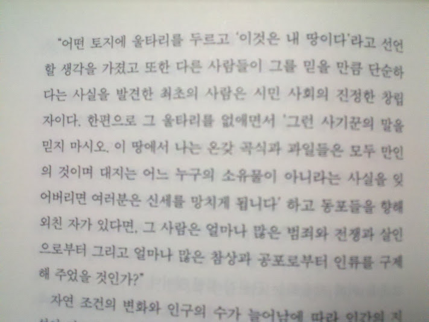
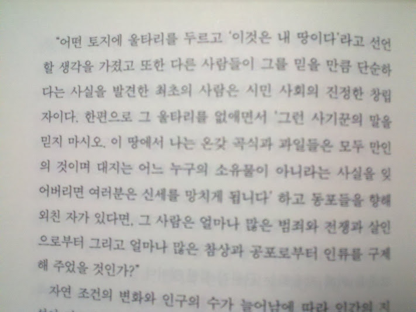

루소
17/03/2012
시민 사회를 까고 사유를 죄악의 근원으로 매도한 장 자크 루소는 민족의 원쑤. 원쑤를 죽입시다.
학교 다닐때 사유재산제의 정당성에 대한 리포트를 제출한 기억이 난다.
기억을 더듬어 돌이켜 보면, 대략 다음과 같은 주장이었다.
사유란 사물에 대한 처분 가능한 독점을 의미하여 이러한 배타적인 권리는 교환, 증여, 상속 의 방법으로 사람들 사이에서 유통된다.
과거로 거슬러 가면 유통이 발생하기 전, 그러니까 모든 사유의 원인이 되는 태초의 사유에 도달할 수 있을 터인데 이 태초의 사유는 정당화할 어떤 근거도 찾을 수 없다. 다시 말해 폭력적이고 권위적인 어떠한 수단이 포함되지 않고서는 설명할 수 없다.
따라서 사유 재산제의 정당성은 (나로서는) 찾을 수 없다. (현재는 정당한 유통 방식이 있을 지 모르나 원래 시작이 정당하지 않으므로)
이런 결론이었는데 의외로 점수가 좋았다.
지금 생각해 보면 그 철학과 교수님이 계절 수업 수강하는 타 과 학생인 나를 먼저 기억하고 만나면 이야기를 걸어 주곤 한 게 - 물론 담배 피면 맛있냐 이 정도였지만 ㅋ - 이 리포트 덕분인 것 같기도 하다.

기억을 더듬어 돌이켜 보면, 대략 다음과 같은 주장이었다.
사유란 사물에 대한 처분 가능한 독점을 의미하여 이러한 배타적인 권리는 교환, 증여, 상속 의 방법으로 사람들 사이에서 유통된다.
과거로 거슬러 가면 유통이 발생하기 전, 그러니까 모든 사유의 원인이 되는 태초의 사유에 도달할 수 있을 터인데 이 태초의 사유는 정당화할 어떤 근거도 찾을 수 없다. 다시 말해 폭력적이고 권위적인 어떠한 수단이 포함되지 않고서는 설명할 수 없다.
따라서 사유 재산제의 정당성은 (나로서는) 찾을 수 없다. (현재는 정당한 유통 방식이 있을 지 모르나 원래 시작이 정당하지 않으므로)
이런 결론이었는데 의외로 점수가 좋았다.
지금 생각해 보면 그 철학과 교수님이 계절 수업 수강하는 타 과 학생인 나를 먼저 기억하고 만나면 이야기를 걸어 주곤 한 게 - 물론 담배 피면 맛있냐 이 정도였지만 ㅋ - 이 리포트 덕분인 것 같기도 하다.
